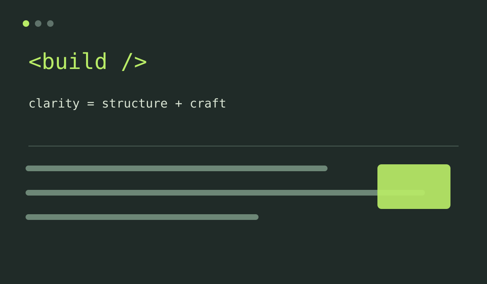
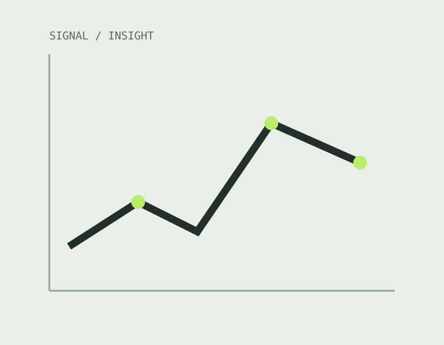
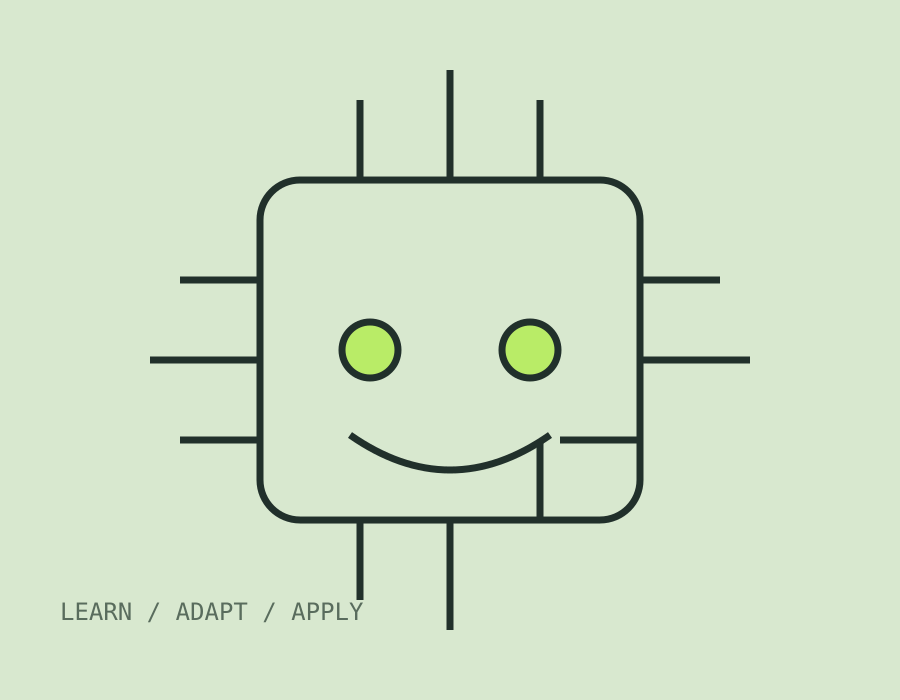
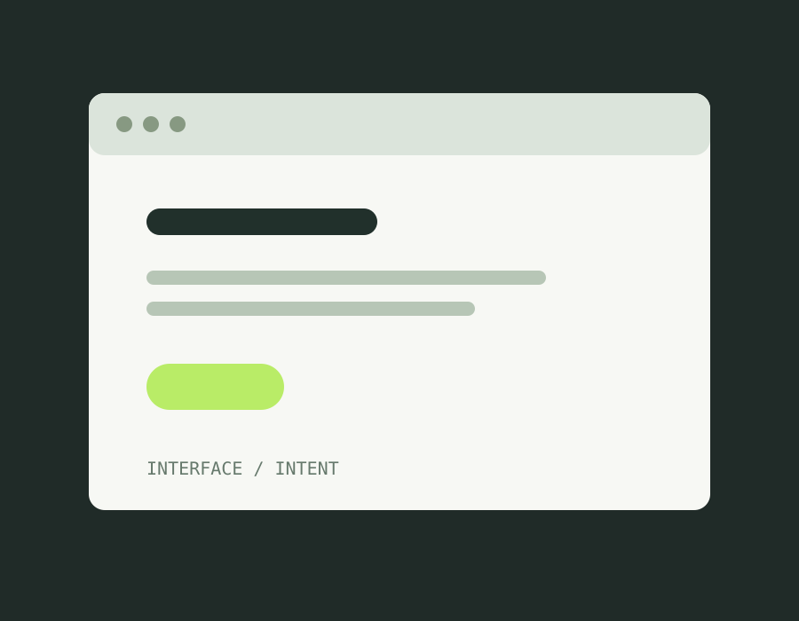
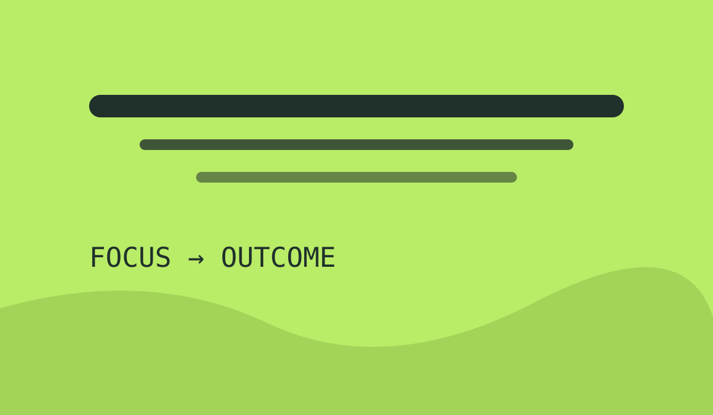

03 / Gallery
A visual index of
what keeps me curious.
Ideas, interfaces, and the technical worlds I like to spend time inside.
The gallery keeps the lighter, more personal side of this portfolio visible — from code and data to the small details that make a workspace feel like your own.





Ben 10 fan
One of my
favorite shows.
I’ve been a big Ben 10 fan for years, so it felt right to give it a small place in my gallery.